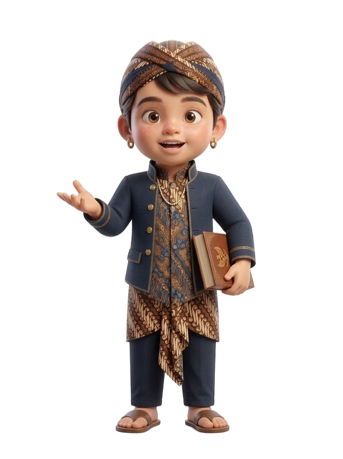
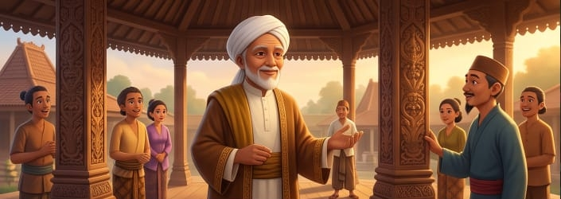
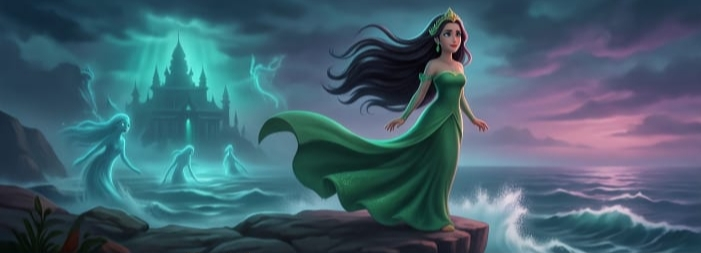
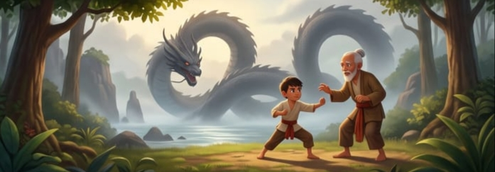
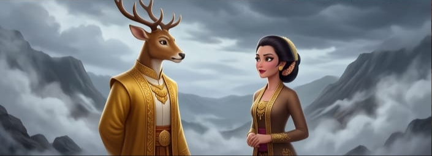

Cerita rakyat Jawa bukan sekadar dongeng pengantar tidur, melainkan cermin kearifan lokal yang sarat akan nilai budi pekerti, kejujuran, dan penghormatan kepada alam serta sesama.


Asal-usul Kota Kudus memiliki cerita yang sangat dalam, yang berkaitan erat dengan perjuangan Sunan Kudus, atau yang juga dikenal sebagai Syekh Jafar Sodiq.Ia memainkan peran penting dalam menyebarkan ajaran Islam di wilayah Jawa Tengah. Dalam cerita rakyat ini, Kota Kudus dulu disebut Tajug, sebuah daerah yang terkenal karena penduduknya beragama Hindu dan aktivitas seni ukir, terutama di wilayah Sunggingan. Cerita ini juga melibatkan seorang pedagang Tiongkok bernama Tee Ling Sing yang memiliki pengaruh besar terhadap seni ukir dan budaya setempat.

Sekitar dulu kala, di sebuah kerajaan di wilayah Pajajaran, terdapat seorang raja bernama Prabu Munding Wangi, yang biasa dikenal sebagai Prabu Siliwangi ke enam.Prabu Siliwangi memiliki seorang anak laki-laki bernama Kadita.Namun, Kadita akhirnya ditolak oleh ibu tiriyya yang bernama Dewi Mutiara.Putri Kadita diubah menjadi seorang wanita yang sangat jelek, dan akhirnya dia memilih untuk melompat ke laut selatan dan menjadi Nyi Roro Kidul. Putri Kadita akhirnya memutuskan untuk tinggal di laut, membangun sebuah istana, dan mengumpulkan ribuan pasukan. Sejak itu, Putri Kadita dikenal sebagai Nyi Roro Kidul.
Cerita rakyat Indonesia yang berjudul Keong Mas sangat terkenal di wilayah Jawa Timur. Cerita ini menceritakan tentang dua saudara perempuan yang memiliki kehidupan yang berbeda, sehingga membuat salah satu dari mereka menjadi iri, akhirnya melakukan tindakan yang berbahaya. Namun, kebaikan akan terus menang mengalahkan kejahatan. Keong Mas juga merasa bahagia setelah mengalami perlakuan yang tidak adil dari saudaranya sendiri. Pada masa dahulu kala, di sebuah kerajaan yang makmur dan damai, hiduplah dua orang putri raja yang bernama Candra Kirana dan Dewi Galuh. Mereka hidup berbahagia dan serba berkecukupan.

Legenda Asal Usul Watu Ulo adalah cerita yang diwariskan oleh masyarakat tentang seekor naga besar bernama Nogo Rojo yang akhirnya dikalahkan oleh seorang pria bernama Joko Mursodo. Legenda ini diyakini oleh penduduk setempat sebagai cerita awal kenapa Pantai Watu Ulo di Jember, Jawa Timur, memiliki nama seperti itu. Pada awalnya, seorang anak bernama Joko Mursodo melarikan diri dari Banyuwangi dan ditemukan di tengah hutan oleh Aki dan Nini Sambi.Mereka merawatnya seolah-olah ia adalah anak mereka sendiri karena suami istri itu belum memiliki anak.Joko Mursodo diajarkan ilmu kanuragan dan beladiri oleh Aki Sambi.

Di balik keindahan alam dataran tinggi Dieng, tersembunyi sebuah kisah sedih yang telah dilestarikan dari generasi ke generasi. Cerita tentang seorang putri yang cantik bernama Sinta Dewi, yang sombongnya membuatnya dihukum dengan kutukan yang tak pernah berakhir dan suatu kawah misterius yang hingga kini masih ada. Pangeran Kidang Garungan, yang memiliki penampilan seperti kijang dan memiliki kekuasaan, datang meminta tangan Putri Sinta Dewi dengan membawa harta yang sangat banyak. Namun di balik kecantikannya, Putri Sinta Dewi memiliki rencana buruk untuk mengubur pangeran secara hidup-hidup. Sebelum waktunya meninggal, Pangeran Kidang pernah menyampaikan sumpah yang sampai saat ini masih dipercaya sumpah mengenai rambut gimbal dan kutukan yang berlaku seumur hidup.
Saksikan animasi dan penuturan kisah cerita rakyat Jawa yang sarat akan pesan budi pekerti.
Buka di YouTube ↗